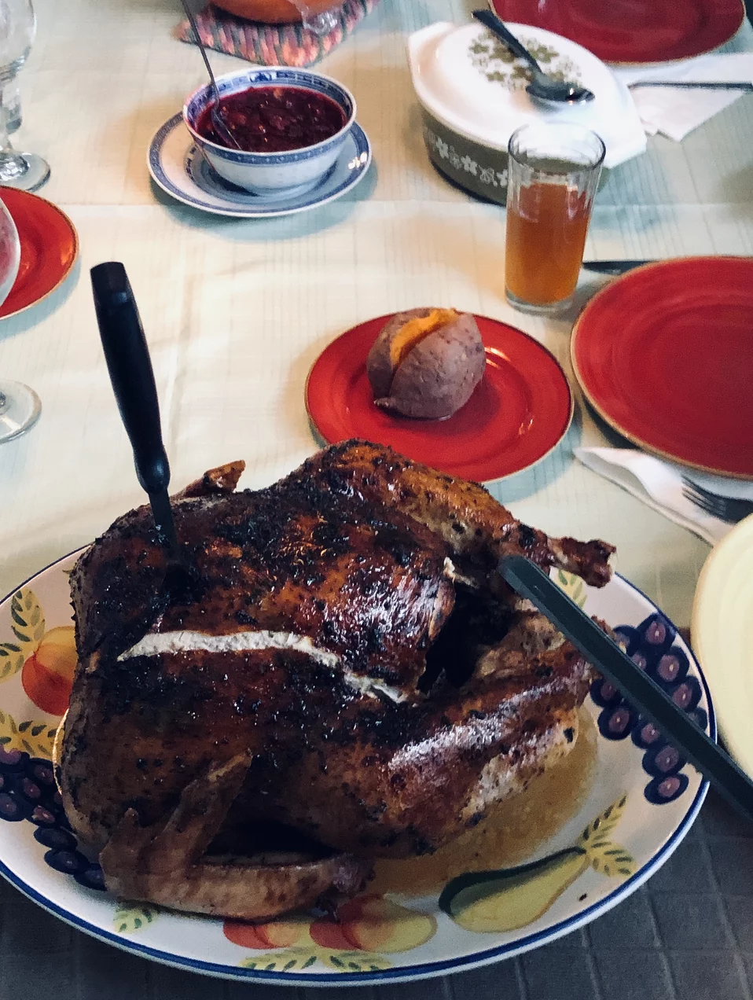

Herb-glazed Roasted Turkey

Description
This recipe is for a herb-glazed roasted turkey. You are free to make your own stuffing on the side and serve in a festive dish.
Ingredients
- 1 (16 pound) whole turkey, neck and giblets removed
- ¼ cup extra-virgin olive oil
- 1 teaspoon salt
- ½ teaspoon ground black pepper
- 1 teaspoon ground thyme
- 1 cup honey
- ½ cup melted butter
- 2 teaspoons dried sage leaves
- 1 tablespoon minced fresh parsley
- 1 teaspoon dried basil
- 1 teaspoon salt
- 1 teaspoon ground black peppe
Steps
- Preheat oven to 325 degrees F (165 degrees C). Rinse the turkey, and pat thoroughly dry with paper towels. Brush the turkey with olive oil, inside and out.
- Mix 1 teaspoon of salt, 1/2 teaspoon of pepper, and the thyme in a small bowl, and sprinkle the turkey with the mixture.
- Place the turkey on a rack set in a roasting pan, and roast in the preheated oven for 2 hours.
- In a bowl, stir together the honey, melted butter, sage, parsley, basil, 1 teaspoon salt, and 1 teaspoon pepper, until the mixture is smooth and well blended. Brush the turkey with the honey glaze, and return to the oven.
- Roast the turkey until no longer pink at the bone and the juices run clear, about 2 more hours. An instant-read thermometer inserted into the thickest part of the thigh, near the bone should read 180 degrees F (82 degrees C). Continue to brush the turkey with the honey glaze frequently as it roasts. Remove the turkey from the oven, cover with a doubled sheet of aluminum foil, and allow to rest in a warm area 10 to 15 minutes before slicing.
Back to the top
Go to main page